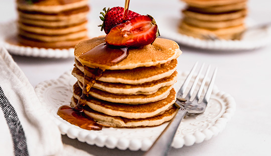
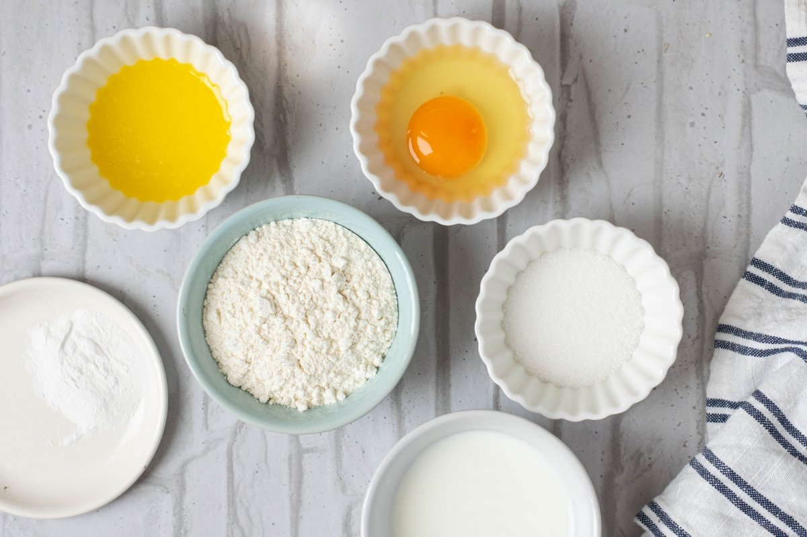
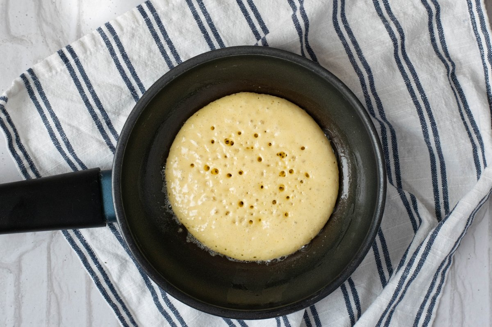

Receta para Hotcakes
Prepara un delicioso desayuno

Ingredientes
- 450g. de harina
- 35g. de Royal
- 1/2 litro de leche
- 50g. de mantquilla derretida
- Un chorrito de vainilla
Preparacion
- En un bowl y con ayuda de un batidor mezclar huevo con azucar
- Agregar leche, mantequilla y vanilla para seguir mezclando
- Cernir la harina con el Royale, agregar y batir hasta integrar con la pasta
- Untar mantequilla en un sarten a medio calentar y bertir la pasta para cocerla

